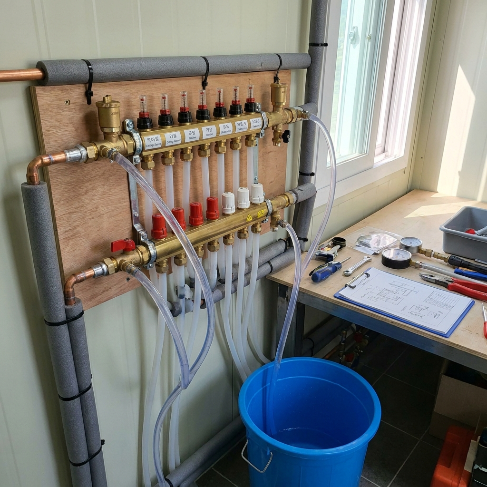
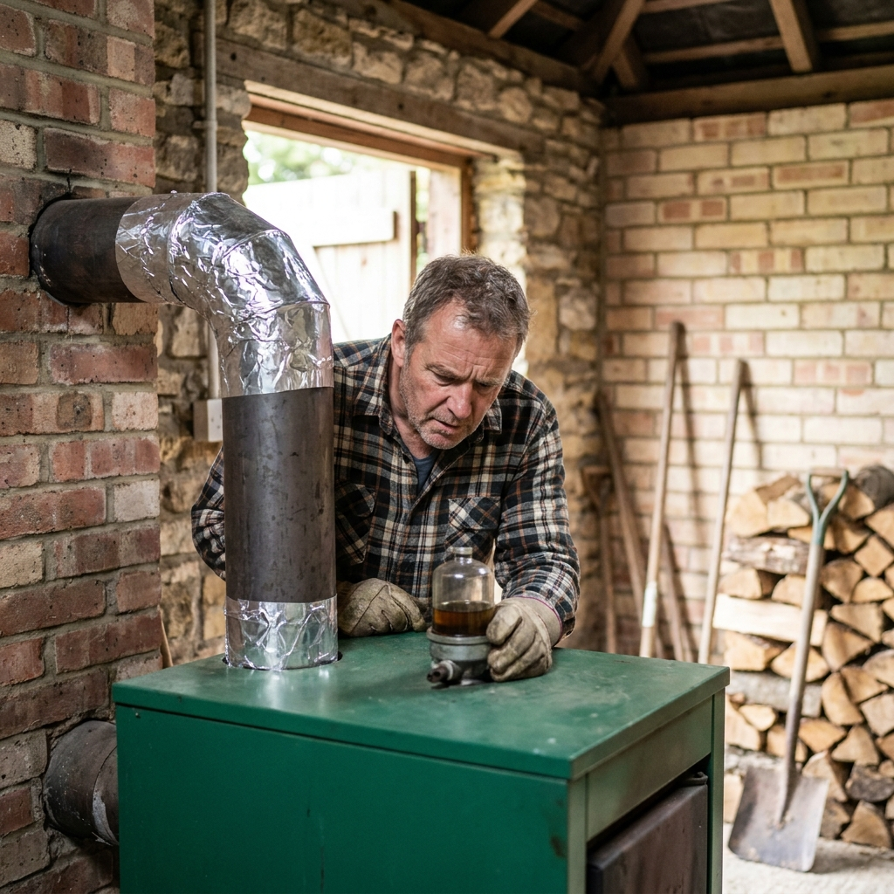

전원주택 보일러 가동 전 자가점검 순서와 배관 공기빼기 방법 — 기름·가스 보일러 난방비 절약 비교표
아침저녁으로 쌀쌀한 가을바람이 불어오는 10월은 전원주택 거주자들에게 본격적인 월동 준비의 신호탄입니다. 아파트와 달리 외기에 직접 노출되는 면적이 넓은 전원주택은 겨울철 난방비 부담이 크기 때문에, 보일러를 본격 가동하기 전 배관 점검과 정비를 미리 마쳐두어야 한겨울 난방비 폭탄과 동파 사고를 예방할 수 있습니다.
오랫동안 쉬었던 보일러를 무턱대고 틀면 배관 속에 찬 공기(에어) 때문에 방 한쪽만 차가운 '편난방'이 생기거나 순환펌프가 헛돌아 고장을 일으킵니다. 오늘 포스팅에서는 기름·LPG가스·화목 보일러 유형별 월동 점검 비교표, 온수분배기 배관 공기빼기(에어빼기) 4단계 셀프 시공법, 난방비를 최대 20% 절약하는 실전 세팅법까지 낱낱이 알려드립니다.

전원주택 온수분배기 퇴수 밸브에 호스를 연결하여 난방 배관 속 공기를 빼내는 점검 작업 / AI 제작 이미지
01 | 10월 환절기 전원주택 보일러 첫 가동 전 점검이 필수적인 이유
여름과 초가을 내내 온수 전용으로만 사용되거나 꺼져 있던 난방 보일러는 내부 순환 펌프와 배관 부품들이 장기간 정체되어 있는 상태입니다.
이 상태에서 갑자기 영하권 추위가 닥쳤을 때 난방을 가동하면 고착된 순환 펌프가 타버리거나, 배관 내부에 고여 있던 에어 방울들이 온수의 원활한 대류를 가로막아 난방 효율이 반토막 납니다.
특히 11월 이후에는 전국의 보일러 AS 기사 출동 요청이 폭주하여 고장이 나도 일주일 이상 추위에 떨어야 하는 사태가 빈번합니다. 기온이 영상 10℃ 안팎을 유지하는 10월 초중순에 자가점검을 완료해야 여유롭게 부품을 교체하고 겨울을 맞이할 수 있습니다.
02 | 보일러 유형별 월동 점검 포인트와 난방비 비교표 (기름 vs 가스 vs 화목)
전원주택은 도시가스 인입 여부에 따라 등유를 쓰는 기름보일러, 저장식 LPG 가스보일러, 혹은 화목(장작)보일러를 주로 사용합니다. 연료별 특징과 월동 점검 포인트는 다음과 같습니다.
| 보일러 유형 |
예상 월 난방비 (30평 기준) |
사전 필수 점검 항목 |
장단점 및 관리 주의점 |
| 기름(등유) 보일러 |
약 35만 ~ 50만 원 |
오일 스트레이너(필터) 청소, 기름탱크 수분 제거 |
화력이 좋으나 유가 변동성 큼, 보일러실 기름 냄새 관리 |
| LPG 가스 보일러 |
약 40만 ~ 60만 원 |
가스 누출 비누거품 검사, 압력 조정기 점검 |
온수 공급 빠르고 조용하나, 도시가스 대비 단가 2배 이상 |
| 화목(나무) 보일러 |
약 10만 ~ 20만 원 (목재비) |
연도(굴뚝) 타르 청소, 화실 재 청소, 댐퍼 점검 |
난방비 가장 저렴하나 매일 장작 투입 및 화재 관리 노동 필요 |
보일러 효율을 10%만 개선해도 한겨울 3개월 동안 15만~20만 원 이상의 기름값과 가스비를 아낄 수 있습니다.
03 | 바닥이 골고루 따뜻하지 않은 '편난방'의 주범 — 배관 에어(공기)
보일러는 정상적으로 연소되고 순환펌프도 도는데, 거실은 따뜻하고 안방이나 작은방 바닥은 얼음장처럼 차가운 현상을 '편난방'이라고 부릅니다.
이러한 편난방의 원인 중 90% 이상은 **난방 배관 속에 갇힌 공기(기포)** 때문입니다. 온수 배관 안에 에어가 차면 공기 방울이 온수 흐름을 막는 에어록(Air-lock) 현상이 발생하여 뜨거운 물이 방 전체로 순환하지 못합니다.
또한 배관 속 공기는 난방수를 순환시킬 때 '꾸르륵', '달가닥'거리는 이상 소음을 유발하고, 배관 내부 금속 부품의 부식을 촉진하는 주원인이 됩니다.
04 | 싱크대 하부 온수분배기 밸브 구조와 부품 명칭 확인
배관 에어빼기를 하려면 먼저 집 안 어딘가에 위치한 '온수분배기'를 찾아야 합니다. 전원주택의 온수분배기는 보통 싱크대 하부장 안쪽이나 다용도실, 보일러실 벽면에 설치되어 있습니다.
분배기는 위아래 두 줄의 황동 또는 스테인리스 금속 바로 이루어져 있습니다. 상단 바는 보일러에서 데워진 온수가 각 방으로 나가는 '공급관(보급관)'이고, 하단 바는 방을 한 바퀴 돌고 식은 물이 다시 보일러로 들어가는 '환수관'입니다.
각 관에는 거실, 안방, 작은방1, 주방 등으로 연결되는 밸브들이 나란히 달려 있으며, 배관 끝부분에는 공기와 물을 빼낼 수 있는 작은 '퇴수 밸브(에어 코크)'가 부착되어 있습니다.

전원주택 보일러실에서 기름 필터 상태와 배기 연통 연결부를 점검하는 모습 / AI 제작 이미지
05 | 초보자도 따라 하는 난방 배관 에어빼기(공기빼기) 4단계 셀프 절차
배관 에어빼기는 특별한 공구 없이 물 호스와 양동이, 십자 드라이버만 있으면 누구나 30분 만에 끝낼 수 있는 간단한 자가정비 작업입니다.
온수분배기 배관 공기빼기 실전 4단계
1. 보일러 전원 끄기 및 분배기 밸브 잠그기: 보일러 실내 온도조절기 전원을 끕니다. 분배기의 모든 방 밸브(공급관/환수관)를 일제히 잠급니다.
2. 퇴수 밸브에 투명 호스 연결: 환수관 끝에 달린 퇴수 밸브(에어콕)에 투명 비닐 호스를 단단히 끼우고, 반대쪽 호스 끝을 큰 양동이나 배수구로 유도합니다.
3. 방 밸브를 '하나씩만' 열고 물 빼기: 첫 번째 방 밸브(예: 안방) 딱 하나만 엽니다. 이어 퇴수 밸브를 천천히 열면 '치이익' 소리와 함께 거품 섞인 물이 뿜어져 나옵니다. 거품 없이 맑은 물만 일정하게 나올 때까지 약 2~3분간 빼낸 후 밸브를 닫습니다.
4. 각 방별로 순차 반복 후 정상 가동: 작은방, 거실 등 나머지 방들도 같은 방식으로 **하나씩 열고 에어를 뺀 뒤 닫는 과정**을 반복합니다. 모든 방의 에어를 다 뺐으면 퇴수 밸브를 완전히 잠그고 모든 방 밸브를 원위치로 활짝 연 뒤 보일러를 켭니다.
밸브를 한꺼번에 다 열고 물을 빼면 수압이 분산되어 에어가 빠지지 않으므로, 반드시 한 구역씩 밸브를 열어 수압을 집중시키는 것이 핵심 비결입니다.
06 | 보일러 순환펌프 고착 증상 확인과 일자 드라이버 해결법
보일러를 켰는데 보일러 본체에서 웅~ 하는 모터 소리만 나고 물이 순환하지 않거나, 과열 에러 코드(예: 02, 16 등 브랜드별 코드)가 뜨며 꺼진다면 순환펌프 고착을 의심해야 합니다.
몇 달 동안 쉬고 있던 순환펌프 날개에 녹이나 이물질이 끼어 모터가 스스로 회전하지 못하는 상태입니다.
이때는 전원 플러그를 뽑은 후, 보일러 커버를 열고 둥근 순환펌프 중앙에 있는 커다란 캡 나사를 풉니다. 나사를 열면 보이는 모터 회전축 홈에 커다란 일자(-) 드라이버를 넣고 좌우로 몇 차례 힘주어 돌려주면, 뻑뻑하던 축이 부드럽게 풀리며 정상 작동을 회복합니다.
07 | 기름보일러 오일 스트레이너(기름 필터) 청소와 누유 점검
기름보일러를 사용하는 전원주택이라면 등유 탱크에서 보일러로 이어지는 배관 중간에 달린 투명한 원통형 '오일 스트레이너'를 반드시 확인해야 합니다.
오랜 기간 보관된 등유 탱크 바닥에는 결로로 인한 물방울과 찌꺼기가 가라앉아 있습니다. 필터 컵 내부에 거무스름한 찌꺼기나 물방울이 고여 있다면, 하단 밸브를 잠그고 필터 컵을 돌려 분리한 뒤 깨끗한 등유로 거름망을 세척해야 합니다.
필터에 물이나 슬러지가 유입되면 버너 노즐이 막혀 불완전 연소가 발생하고, 심한 그을음과 함께 점화 불량 에러가 발생합니다.
08 | 보일러실 연통(배기통) 이탈·찌그러짐과 일산화탄소 경보기 점검
가을철 점검에서 가장 주의 깊게 살펴야 할 안전 항목은 바로 연통(배기통)의 체결 상태입니다.
여름철 태풍이나 강풍, 또는 진동으로 인해 보일러 배기 연통 연결 부위가 벌어지거나 석고 붕대, 내열 실리콘이 갈라져 일산화탄소(CO) 폐가스가 보일러실 내부로 누출될 위험이 있습니다.
연통 이음매마다 내열 실리콘(회색/투명)이 틈새 없이 꼼꼼하게 도포되어 있는지 손전등을 비추어 확인하고, 법적 의무 설치 대상인 **일산화탄소 경보기의 테스트 버튼**을 눌러 경보음이 정상적으로 울리는지 점검해야 합니다.
09 | 겨울철 한파 동파 방지를 위한 퇴수 밸브 위치와 보온재 시공 팁
전원주택의 보일러실은 외벽 쪽이나 실외 창고에 위치하는 경우가 많아 영하 15℃ 이하의 혹한기에 직수 공급 배관이 꽁꽁 얼어붙기 쉽습니다.
노출된 수도 배관과 온수 배관에는 두께 20mm 이상의 난연 고무발포 보온재를 씌우고, 보온 테이프로 빈틈없이 감싸주어야 합니다. 한파가 극심한 지역이라면 배관에 센서형 동파방지 열선(정온전선)을 감아두는 것이 안전합니다.
또한 겨울철 장기간 집을 비울 때를 대비하여, 야외 부동전과 외부 노출 수도꼭지의 퇴수 밸브를 잠그고 배관 속 잔수를 완전히 빼내는 방법을 미리 숙지해 두어야 합니다.
10 | 전원주택 난방비 20% 절약하는 외출 모드와 온돌 모드 세팅법
마지막으로 겨울철 전원주택 난방비를 획기적으로 줄여주는 실내 온도조절기 운용 노하우입니다.
전원주택 난방비 절약 실전 세팅 수칙
- 단열이 취약한 주택은 '온돌 모드(난방수 온도)' 사용: 외풍이 있는 주택에서 '실내 온도 모드'를 쓰면 센서가 차가운 공기를 감지해 보일러가 24시간 멈추지 않고 돌아갑니다. 방바닥 물 온도를 제어하는 '온돌 모드(권장 55~65℃)'로 설정하세요.
- 외출 시 보일러 끄지 말고 평소보다 2~3℃만 낮추기: 완전히 꺼진 차가운 방바닥을 다시 데우는 데 막대한 연료가 소모됩니다. 2~3일 이내 짧은 외출 시에는 18~20℃를 유지하거나 '예약 모드(3~4시간에 20~30분 가동)'를 활용하세요.
- 안 쓰는 방 밸브는 반만 잠그기: 방 밸브를 완전히 잠그면 한겨울 혹한기에 그 방 배관만 얼어 터질 수 있습니다. 밸브를 45도 각도로 살짝 열어두어 미세한 온수가 순환하도록 관리해야 동파를 막을 수 있습니다.
📌 함께 읽으면 좋은 가을 나들이 & 생활 팁
#전원주택보일러점검
#보일러에어빼기
#난방배관공기빼기
#온수분배기점검
#기름보일러월동준비
#전원주택난방비절약
#보일러편난방해결
#순환펌프고착
#보일러동파예방
#온돌모드설정법